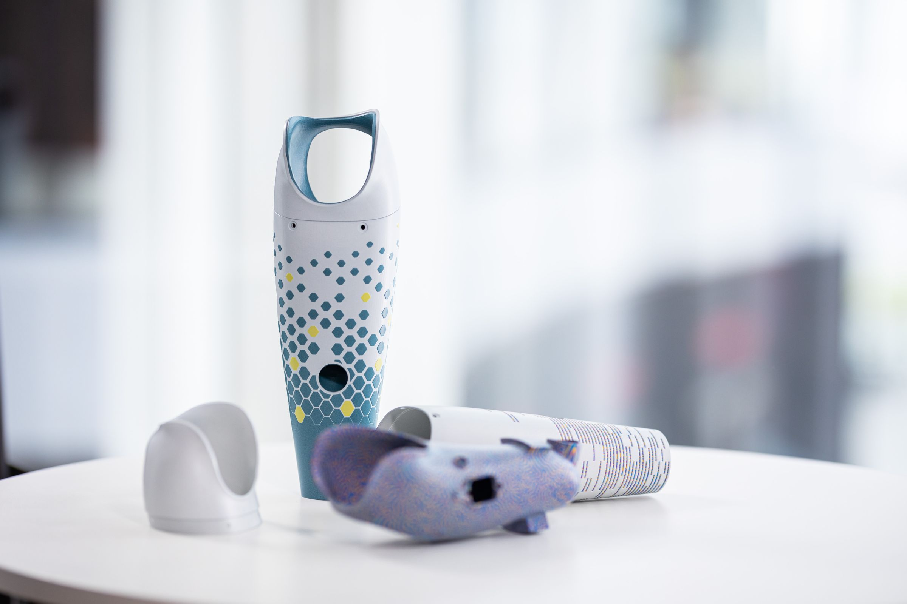
D-Pulp
Protesi mioelettriche di arto superiore progettate con un algoritmo e stampate in 3D, al posto della laminazione manuale.Myoelectric upper-limb prostheses designed with an algorithm and 3D printed, replacing manual lamination.
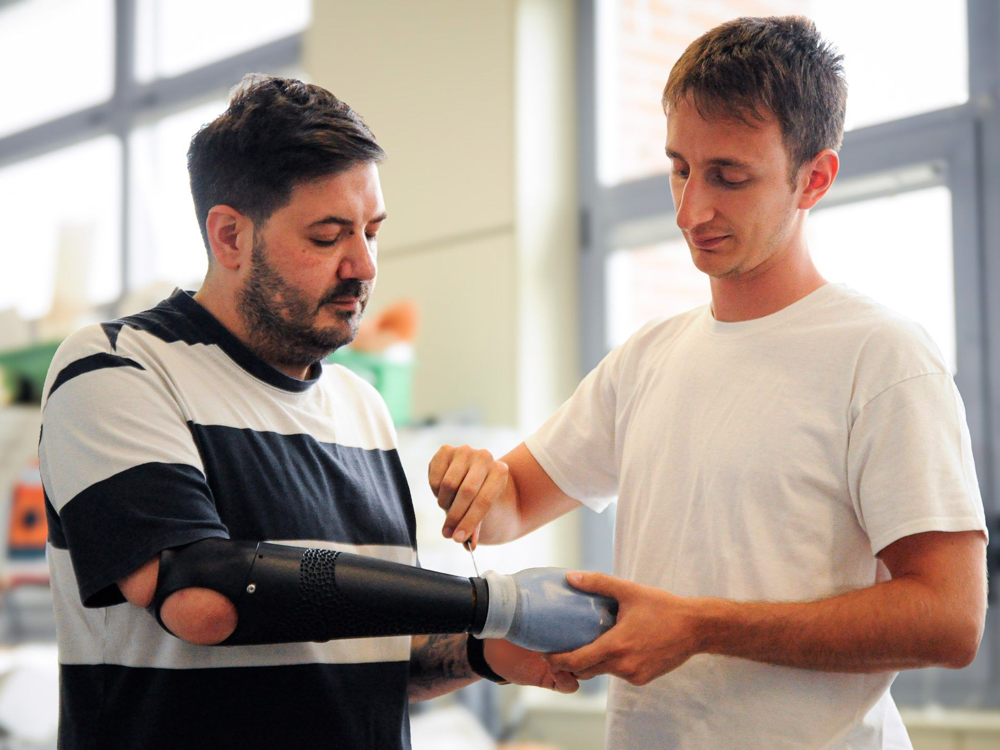
20-25 ore di lavoro manuale per ogni protesi20-25 hours of manual work per prosthesis
Al Centro Protesi INAIL le protesi mioelettriche di arto superiore nascono da un processo in gran parte artigianale: calchi in gesso, laminazione in resina, rifinitura a mano. Il risultato è preciso, ma richiede 20-25 ore di lavoro del tecnico per ogni protesi.At Centro Protesi INAIL, myoelectric upper-limb prostheses come from a largely handcrafted process: plaster casts, resin lamination, hand finishing. The result is precise, but it takes 20-25 hours of technician work for each prosthesis.
- Non è ripetibile: il risultato dipende dall'esperienza e dalla manualità di chi lo realizza.It isn't repeatable: the result depends on the experience and manual skill of whoever makes it.
- Quando una protesi va sostituita, la copia non è mai identica all'originale.When a prosthesis needs replacing, the copy is never identical to the original.
- La personalizzazione estetica è molto limitata.Aesthetic customization is very limited.
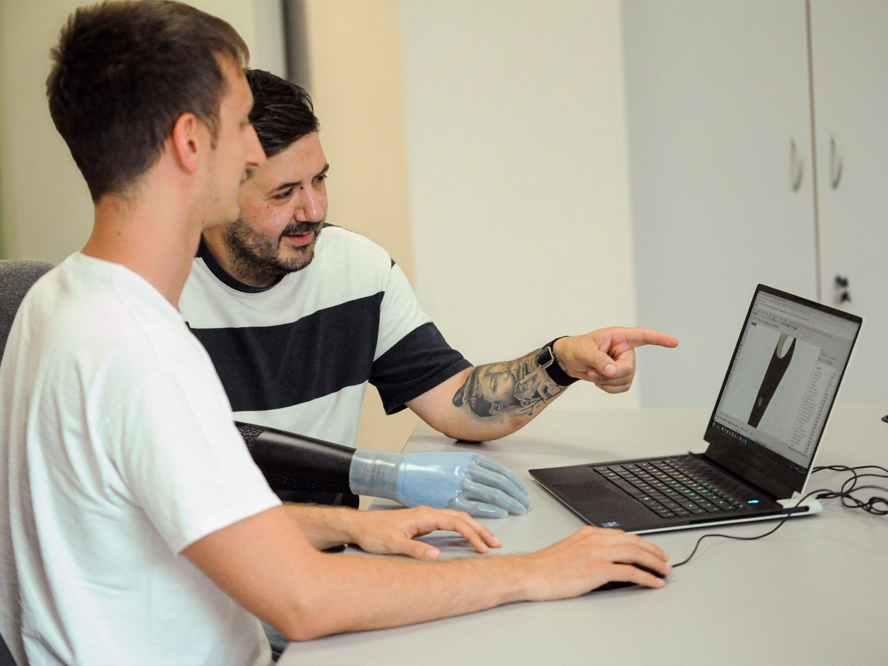
Un software per i tecnici ortopediciA software tool for orthopedic technicians
max 3 hHo scritto in Grasshopper un algoritmo con un'interfaccia semplificata, pensata per essere usata direttamente dai tecnici ortopedici. Le prime fasi del lavoro con il paziente restano quelle di sempre: il software sostituisce solo la laminazione e la rifinitura di invasatura e cover.I wrote a Grasshopper algorithm with a simplified interface, designed to be used directly by orthopedic technicians. The first steps of working with the patient stay the same: the software only replaces the lamination and finishing of socket and cover.
Il tecnico scansiona i calchi in gesso, imposta nell'interfaccia spessori, sensori, batteria e fissaggi, e ottiene invasatura e cover pronte per la stampa in PA12 con HP Multi Jet Fusion.The technician scans the plaster casts, sets thicknesses, sensors, battery and fastenings in the interface, and gets a socket and cover ready to print in PA12 with HP Multi Jet Fusion.
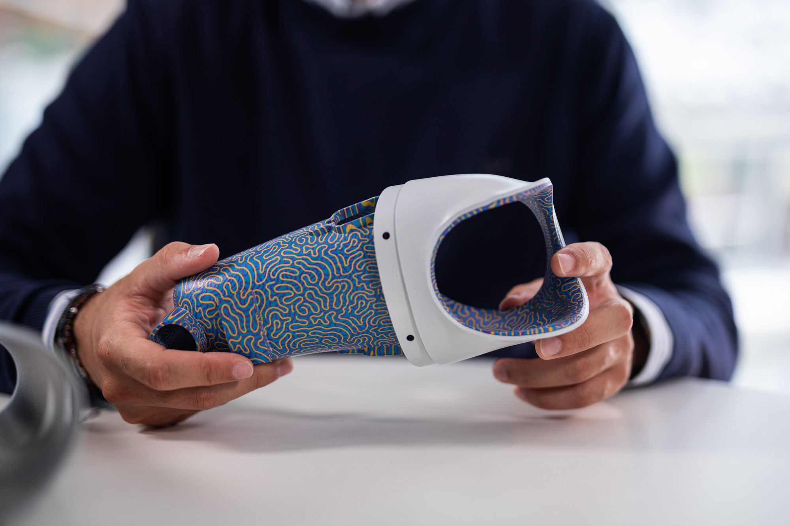
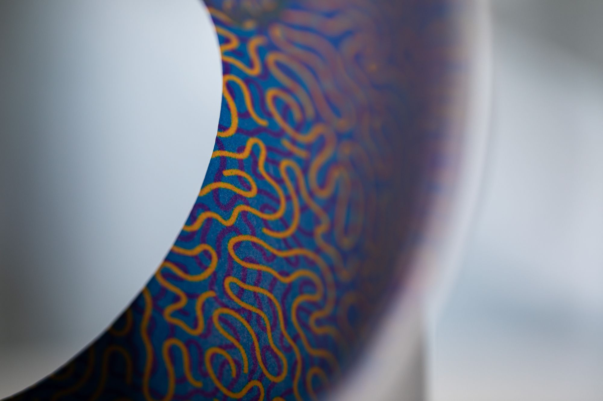
Una protesi che il paziente sceglieA prosthesis the patient chooses
La stampa multicolore permette al paziente di scegliere colori, texture predefinite o un proprio disegno, in rilievo o inciso. La texture viene generata dall'algoritmo direttamente sulla superficie della cover.Multicolor printing lets the patient choose colors, preset textures or their own drawing, embossed or engraved. The algorithm generates the texture directly on the cover surface.
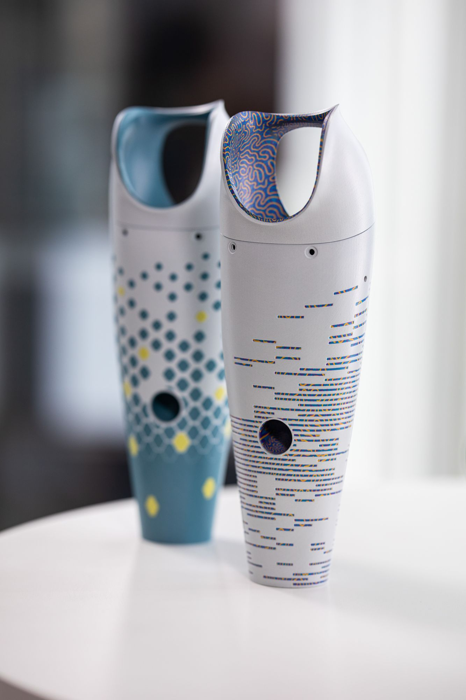
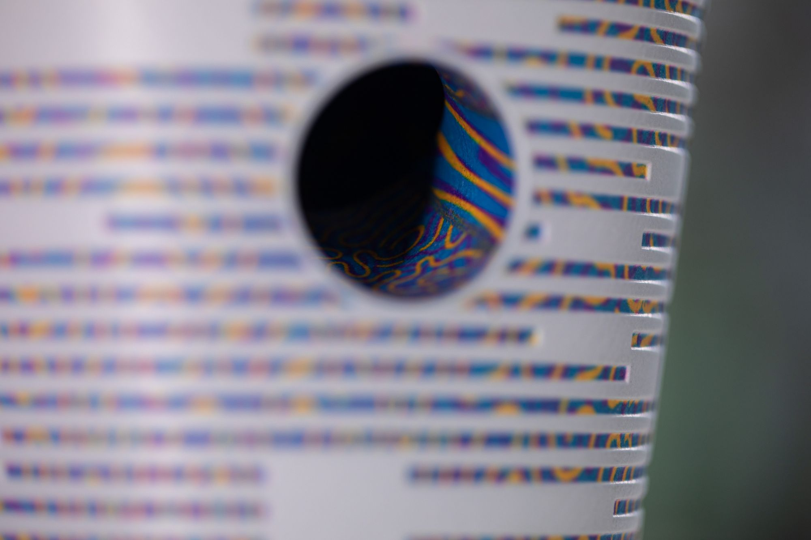
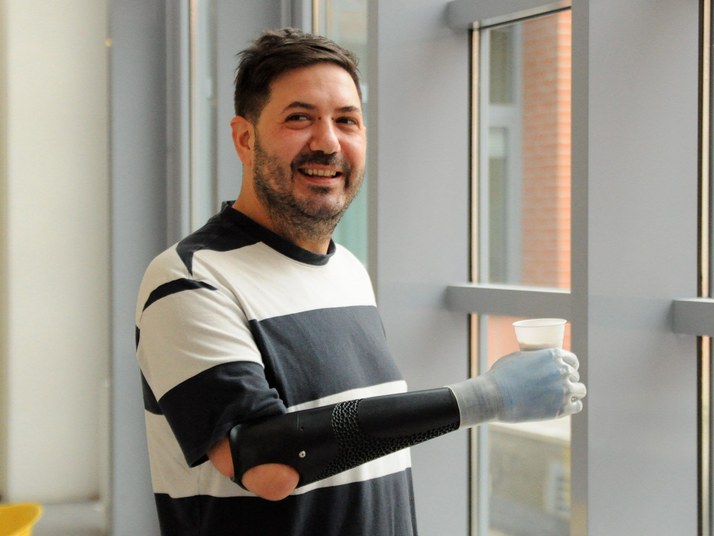
Ripetibile e archiviabileRepeatable and archivable
Ogni protesi resta in un archivio digitale: una sostituzione diventa una ristampa, non una nuova lavorazione. Le ore di lavoro che dipendono dall'operatore quasi si dimezzano.Every prosthesis is kept in a digital archive: a replacement becomes a reprint, not a new build. Operator-dependent working hours are almost halved.
Cybathlon 2024
Una protesi realizzata con D-Pulp è scesa in gara al Cybathlon 2024 di Zurigo, la competizione in cui persone con disabilità affrontano compiti della vita quotidiana con le proprie tecnologie assistive.A prosthesis made with D-Pulp competed at Cybathlon 2024 in Zurich, the competition where people with disabilities take on everyday tasks using their own assistive technology.
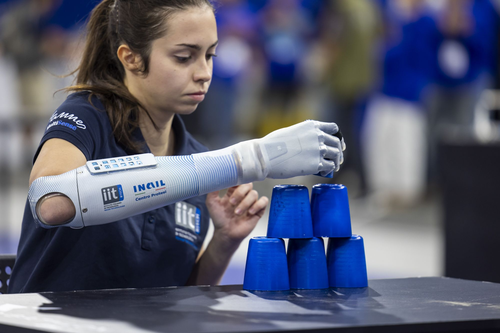
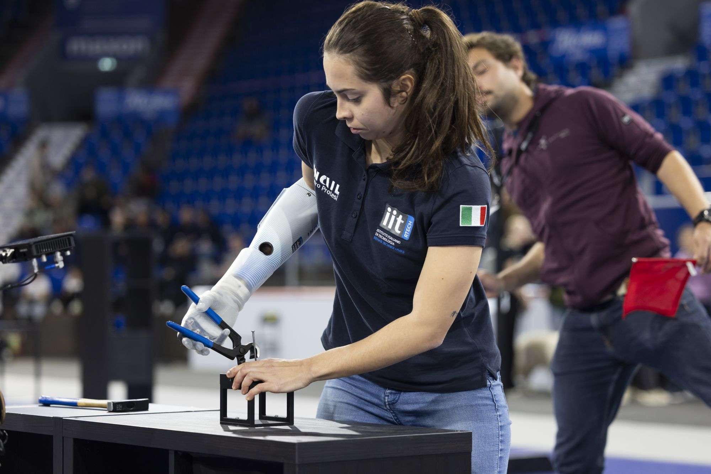
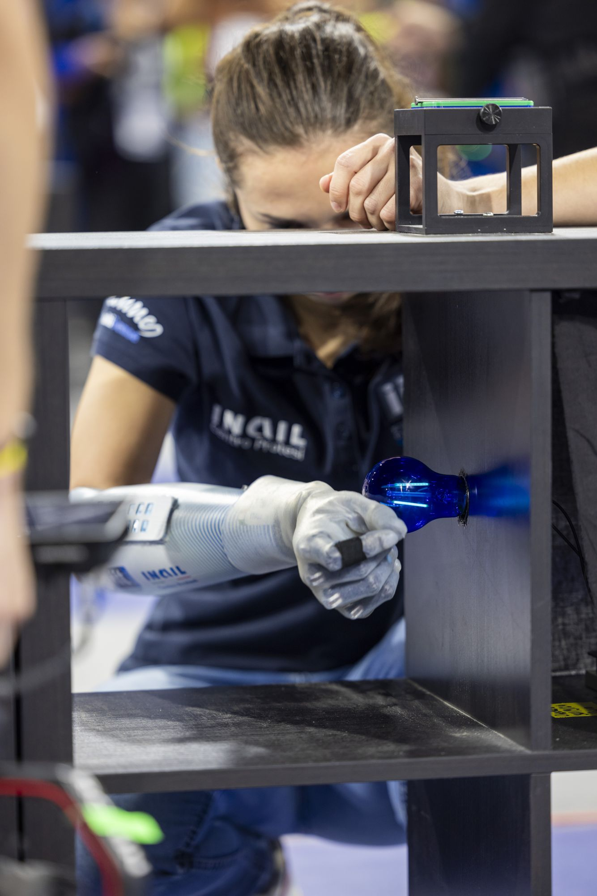
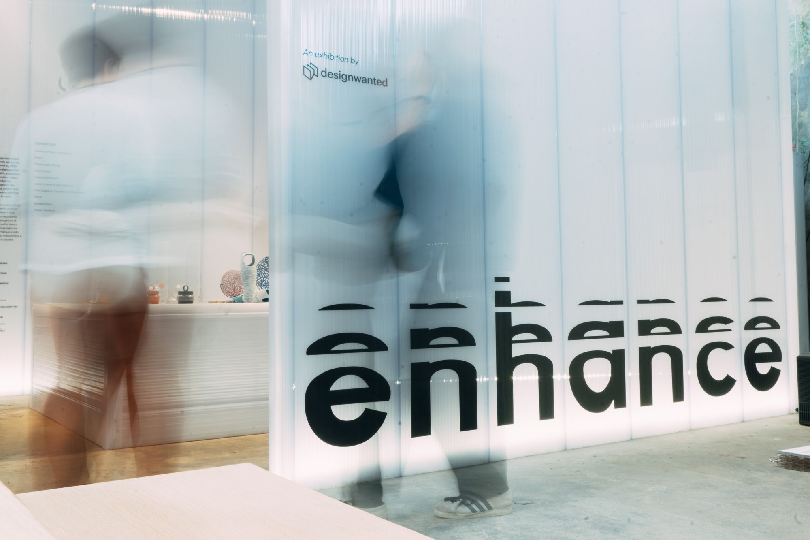
Enhance – Design for Social Impact
D-Pulp è stato esposto alla mostra di DesignWanted durante la Milano Design Week, dal 15 al 21 aprile 2024, nel circuito Isola Design District.D-Pulp was shown at the DesignWanted exhibition during Milan Design Week, 15-21 April 2024, in the Isola Design District circuit.
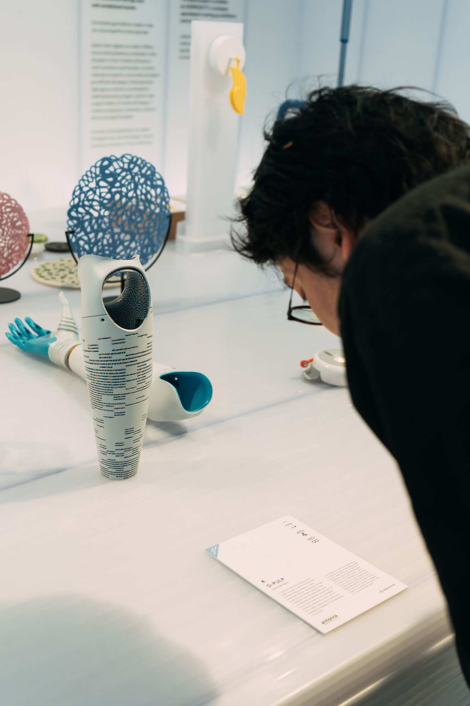
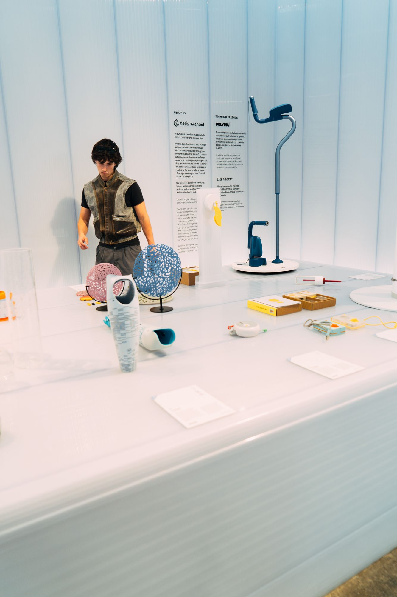
Dicono di D-PulpD-Pulp in the press
- Il Sole 24 OreD-Pulp, vincitore del Dyson Award 2023: «vogliamo rivoluzionare la produzione di protesi»2023 ↗
- Wired ItaliaJames Dyson Award 2023, i vincitori italiani2023 ↗
- Dyson Italia“D-Pulp” è il progetto vincitore dell'edizione italiana del James Dyson Award 2023SetSep 2023 ↗
- Digital Health Italia“D-Pulp” vince l'edizione italiana del James Dyson Award 2023SetSep 2023 ↗
ContestoContext
Tesi di laurea magistrale in Design del Prodotto, Università Iuav di Venezia, sviluppata all'Area Ricerca del Centro Protesi INAIL di Vigorso di Budrio.Master's thesis in Product Design, Iuav University of Venice, developed at the Research Area of Centro Protesi INAIL in Vigorso di Budrio.
Il mio ruoloMy role
Progettazione dell'algoritmo e dell'interfaccia per i tecnici ortopedici, personalizzazione di invasatura e cover, stampa 3D del dispositivo.Design of the algorithm and the interface for orthopedic technicians, socket and cover customization, 3D printing of the device.
Rhino · Grasshopper · EinScan HX · HP Multi Jet Fusion